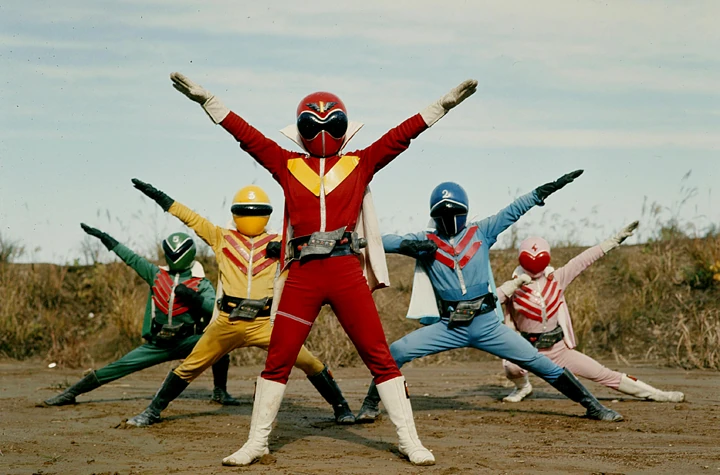

Power Rangers Dino Thunder
Esta es una página dedicada a la serie de Power Rangers DinoThunder televisada en el 2004 en los canales de ABC Kids y en el bloque de familia de Jetix en ABC. La décimo segunda entrega de la serie americana llegó como gran contendiente al resto de las series al traer de vuelta a personajes anteriores y la historia en general de los Power Rangers.
Esta serie está puesta justo después de Ninja Storm, 2003, tomando el 2004 y 2005 como los años en los que se transmitió antes de que Mystic Force, 2006, tomara su lugar después de que terminara.
Los Power Rangers son un grupo de 3 a 5, y en ocasiones incluso más, personajes, usualmente adolescentes con “actitud”, cuales reciben poderes de una figura de mentor quien los entrena y enseña no solo a usar sus poderes, pero también a ayudar a las personas ante los monstruos que el villano está mandando en contra suya.
Super Sentai es una serie japonesa que usa los mismos trajes a los Power Rangers, estos se les da a Saban para crear Power Rangers, tienen diferentes tramas y personajes. Los Super Sentai tienen más temporadas y más equipos ya que los Power Rangers no adaptan cada una de las series que se dan. Generalmente en Super Sentai los equipos están compuestos por adultos, tienen lenguaje malsonante, hay sangre e incluso muertes, esto dado por la diferencia en lo que los niños japoneses se les permite ver, en Power Rangers los equipos generalmente están compuestos por adolescentes, no hay sangre, no hay lenguaje malsonante y muy rara vez se muere un personaje. Otras diferencias menores como sus ataques siendo más realistas con balas o shurikens, en los Power Rangers optaron por poderes mágicos o rayos láser que son menos violentos a comparación. También al ser la serie original se pueden ver las diferentes versiones de la cinta, fuera de las peleas, en las que se desarrolla la historia.
